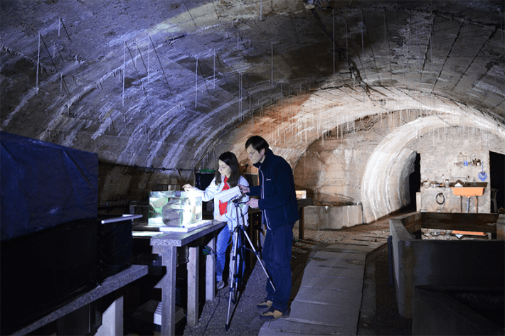
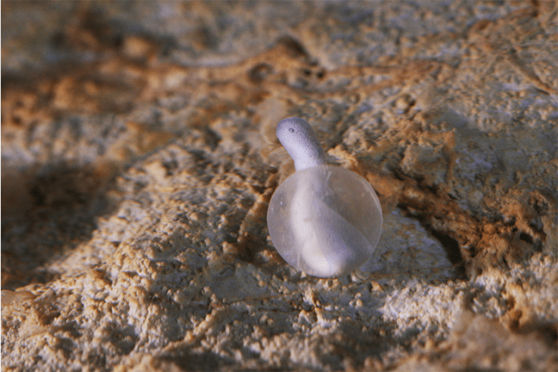

To get to know the olm, Europe’s only exclusively cave-dwelling vertebrate, you need to meet it on its terms. Extremely particular terms.
The pale, blind salamander (Proteus anguinus), once thought to be the offspring of dragons, can live for up to a century.* It only lives in deep cave systems, hundreds of feet underground, where light doesn’t reach, in countries across the north Mediterranean and the Balkans. It is long and thin, growing up to about a foot in length, with stunted limbs and a somewhat sedentary lifestyle. It is sensitive to sound, vibrations, pressure changes, temperature, electromagnetism, and the intrusion of light, and it only appears above ground when washed to the surface by high waters.
Nautilus premium members can listen to this story, ad-free.
Nautilus members can listen to this story.
It is, thus, not exactly the easiest study species—but this hasn’t deterred Gregor and Magdalena Aljančič. The husband-and-wife team spend a fair amount of their time in the pitch-dark, under Kranj, Slovenia’s fourth-largest city, the railway and old road to the capital rumbling above. Their cave laboratory, established by Gregor’s father, Marko, in 1960, can be entered through an inauspicious metal door on an industrial estate. Far from your typical scientific establishment, its natural cave walls are covered in rare species of crickets and spiders, and only phone flashlights are allowed to light your way around. It’s a haven for 20 of these olms, living in specially made pools.
Once thought to be the offspring of dragons, olms can live for up to a century.
Technological advancements in this subterranea are something of an Aljančič family preoccupation. Upgrades have included using a vintage, 8-bit ZX Spectrum computer connected to a camera as part of a high school project in 1989, a low-resolution CCTV-style system in the late ’90s, one of the earliest examples of biological video-tracking in the early 2000s, and the last major advance in 2009, when a digital infrared video system was put in.
All of this has yielded important insights, including on the olm’s sensitivity to the Earth’s magnetic fields and its reproductive behavior. But work in a lab, however creatively constructed, can only get you so far. Testing water using environmental DNA technologies has allowed scientists to learn more about where olms make their dark homes. Scientists have also discovered how much these reclusive animals are impacted by goings on at the surface; although they can live nearly a thousand feet below ground, olms are threatened by water pollution and construction and deforestation in large parts of their range. And a warming climate looms large over their fragile cave ecosystems, as they and other species there depend on a consistently cool temperature. To truly understand the curious amphibian and the threats it faces, though, there’s a need to go deep, literally. And perhaps unsurprisingly, the Aljančičs have a plan for that.
Why such effort for a strange species barely known outside a handful of countries?
The olm’s striking biology, which also includes the capability of going for years without eating and having one of the largest—albeit currently unsequenced—animal genomes, offers potential insights that could change medicine. Its life (and death) also exposes otherwise hidden impacts of human activities happening right now, and their damages.
Karst, the Slovenian-born name for the limestone landscapes home to olms as well as many other rare and unusual species, covers 20 percent of the world’s terrestrial surface, and its groundwater provides anywhere from 20 to 50 percent of drinking water for people. It is easily carved by water, creating essential aquifers—including the Edwards Aquifer in Texas—as well as elaborate caves, such as the Mammoth Cave system, which runs more than 400 miles in Appalachia. It also harbors countless isolated caves. All of these hidden ecosystems can help provide answers to great questions of evolution, ecology, and climate adaptation.

STRANGE SCIENCE: Wife and husband team Magdalena and Gregor Aljančič have devised a wide range of creative solutions for studying the elusive, sensitive olm. They do most of their work here, in their cave lab in Slovenia, which was originally set up by Gregor’s father in the 1960s. Credit: Tomaz Bukovec.
Despite containing such life-sustaining commodities and tantalizing potential for discovery, subterranean karst ecosystems remain severely understudied compared to other biomes. This is especially striking, given that they face considerable threats from intensive farming and industrial development, which can cause pollutants to leach into groundwater—an issue that also contributes to olms, and many other cave-dwellers, being on a downward population trajectory.
Cave specialist animals provide a barometer of ecosystem health, and olms in particular, with their decades-long lifespans, can act as a living gauge for groundwater quality and other disturbances, tracking the historic presence of pollutants right up to the present. A proverbial canary in the karst cave.
“Even though Proteus is only endemic to dynamic karst in our region, karst itself is everywhere,” says Magdalena Aljančič, whose day job is with the Karst Research Institute in Postojna, home to Slovenia’s largest known olm population. “Sometimes you need such a charismatic species to better put your message across.” And, yes, to many people, the olm is the picture of charisma; its image once graced Slovenian coins, is used as a poster-animal for local ecotourism, and even spawned the name of that country’s oldest science magazine, Proteus. So, here, its survival has an added cultural urgency.
With water security and biodiversity high on political agendas in Europe, now might well be the olm’s moment. And substantial developments in monitoring technologies over the past decade offer the chance for olm research to make a great leap forward: the creation of a “virtual lab” in the karst underworld.
“The main reason for building the cave laboratory 65 years ago was to circumvent the inaccessibility of Proteus’ natural habitat and allow long-term observations under more controlled conditions,” says Gregor Aljančič.
“Of course, there has always been as much fieldwork as possible as caves are the ultimate place to test laboratory observations, but this can be dangerous,” he says. He would know, having experienced a lucky escape after a close call during a cave dive collecting olms for DNA swabs 10 years ago. After losing the safety line, with his oxygen rapidly running out and his family fearing the worst, he just managed to escape to safety. “With advanced technologies, the idea of studying olms in the wild is becoming more and more realistic. The new approach would not only be more efficient but could also save lives.”
Olms can go for years without eating and have one of the largest animal genomes.
The Aljančičs have mapped out plans for something they are calling the ProteusWatch Virtual Lab. It would recreate almost all of the experimental capabilities of their home Kranj cave lab—except that the humans would be far, far away from their study subjects. The in-the-deep-wild lab would pair video analysis with machine learning, advanced environmental sensors, imaging sonars, and underwater drones to study the ecology and behavior of olms. This setup could, for the first time ever, allow researchers to record the animals’ activities, sensory capabilities, interactions, foraging, and reproduction—in situ, in real time. A second proposed virtual lab would focus on the groundwater habitat, painting a picture of how healthy and stable these extreme ecosystems really are.
Just assembling these capabilities might be hard enough, but studying these remote cave ecosystems—even from afar—introduces a certain echo from quantum mechanics: the quandary of how much observing might change what is being observed. Whatever technology goes into the chosen deep cave, it must not change the way the sensitive species interacts with its environment, whether that’s from light, vibrations, or electromagnetism. It also must be robust enough to work with infrequent maintenance and in harsh conditions. Training AI also won’t be easy, given that the nearest machine learning models to what’s needed have only looked at surface-living lizards.
Difficult and impossible are different things, however. Especially to the Aljančičs. Solutions are out there, including special cages to block out electromagnetic fields from equipment. Initial ideas have been explored through the European Union’s LifeWatch ERIC program, and new machine learning studies are in progress.

EMERGING INTELLIGENCE: Once thought to be the spawn of dragons, olms still live a mysterious life—one that can stretch for a century. If the Aljančičs’ AI-enabled project to study them succeeds, we may learn more secrets about this salamander’s extreme biology. Credit: Gregor Aljancic.
The goal is to make the data from these remote labs freely available. So computer scientists, led by Zhiming Zhao at the University of Amsterdam, are working to make sure sensors, software, and AI are aligned in a central computing infrastructure, enabling researchers to make the best use of the proposed facility. Zhao’s team has already created similar Open Science facilities for projects studying ecosystems in the Netherlands and Italy, and for taxa as barely tangible as phytoplankton.
There are several parties keen to get the ball rolling, too, with the governments of Slovenia, Croatia, and Italy all committed to monitoring their olm populations in support of European Union biodiversity laws. And making the data open to all, many hope, will accelerate research—for the benefit of the organisms living in these remote ecosystems, as well as the humans above.
The world of karst, like many fields of study, has been one long marked by research silos, and “biologists are still on one side of the river, with karstologists on the other bank,” Gregor Aljančič notes. “The result of this project would be that the geologists and biologists will start to work together where this is most needed.”
Christos Arvanitidis, CEO of LifeWatch ERIC, a group which aims to use digital technologies to investigate European biodiversity and the ecosystem services it provides, is backing the team’s efforts as a new leading example of accessible, multidisciplinary science. “You can show your data to other communities in [a] way they can take advantage of, prove to them that this type of research can be done, and they can perhaps use their own data, for the same kind of analysis,” he says. “That’s amazing, because it leads progressively to a kind of knowledge which is produced by as many data, from as many domains, as possible.”
Getting the olm remotestudy project off the ground would be a huge step forward for cave research more broadly. The field of cave ecology to date has been disproportionately focused on bats, while caves have also often remained outside climate and biodiversity discussions. Organizations working to protect these little-understood ecosystems—and their subterranean denizens—worldwide are watching with interest.
This includes the San Antonio Zoo, whose specialist cave team has set up its own lab, in part geared toward the conservation of the federally protected Texas blind salamander (Eurycea wallacei), but also other threatened groundwater species.
“Animals living in aquifers tell you a lot more than spot water checks about the long-term quality of the groundwater,” says Danté Fenolio, who runs the zoo’s Center for Conservation and Research. “Because if some contaminant blew through, there is nowhere else to go; they are exposed to it, whereas sometimes our routine testing misses those contaminants because of timing.”
San Antonio straddles the edge of the artisan zone of the karst-based Edwards Aquifer, where fresh groundwater is easy to tap, supplying 2.5 million people at home, on farms, or in industry. But water flows ever-downward, too. So, notes Fenolio, “There’s a real irony that unfolds, where most of the people that are actively involved in contaminating aquifers live right above them, using those waters, and a lot of folks just don’t think about it.” These threats are varied: nitrates and pesticides from intensive farming, heavy metals from industry, compounds from pharmaceuticals, and petroleum products and other materials from household and industrial use. And those impacts can wreak havoc on the rare animals adapted to life beneath the surface—as well as trickle back to the water supply for people.
It’s said that some secrets should stay buried. But all signs suggest that leaving those of the olm and other sensitive subterranean creatures in their hidden habitats would be perilous. Whatever happens with the latest effort to better understand the olm’s hidden habitat, its advocates remain steadfast.
“As long as we have this animal, we are obliged to work for it,” says Magdalena Aljančič. Even if their virtual cave lab is never assembled, “it’s not like we’d just concentrate on another species,” she says. “We’ll be motivated to work further, even if that means starting all over.”
And as Gregor Aljančič adds, recalling their days of the 8-bit computer and low-fi video systems, “We are used to improvising, to find all kinds of solutions on the way.” 
Lead image: PJakopin / Wikimedia commons
*As originally published, this article stated that olms are eyeless. They do, in fact, have eyes, but their eyes are rudimentary and covered with skin in adults, so they're blind. This has been corrected in the article above.
References
- Original Article: https://nautil.us/in-the-land-of-the-eyeless-dragons-1232238/